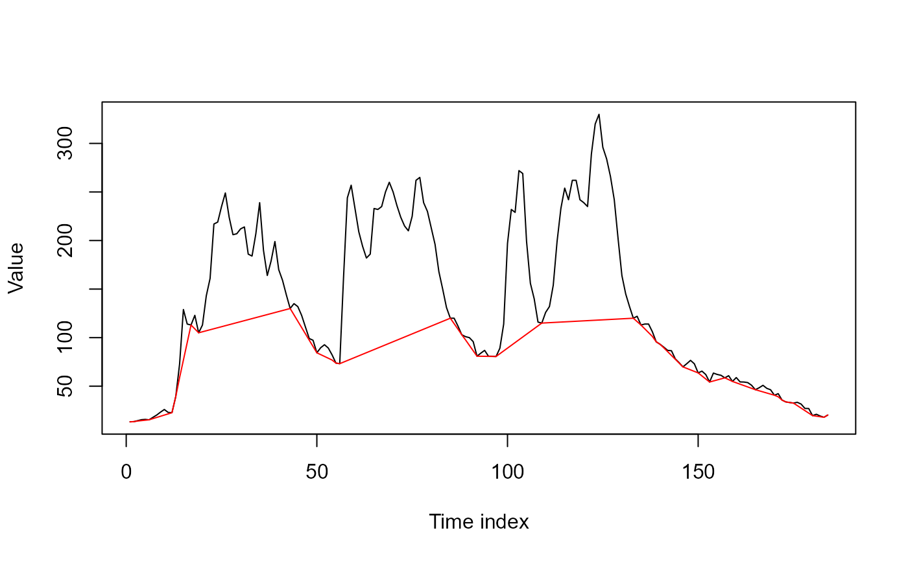
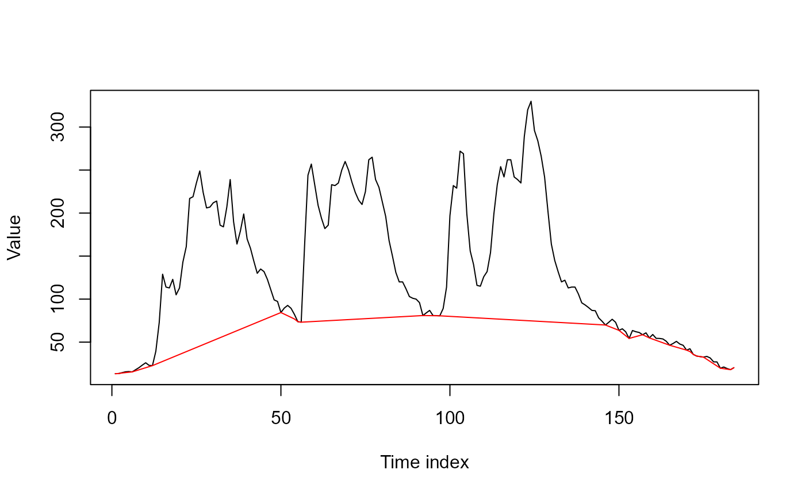
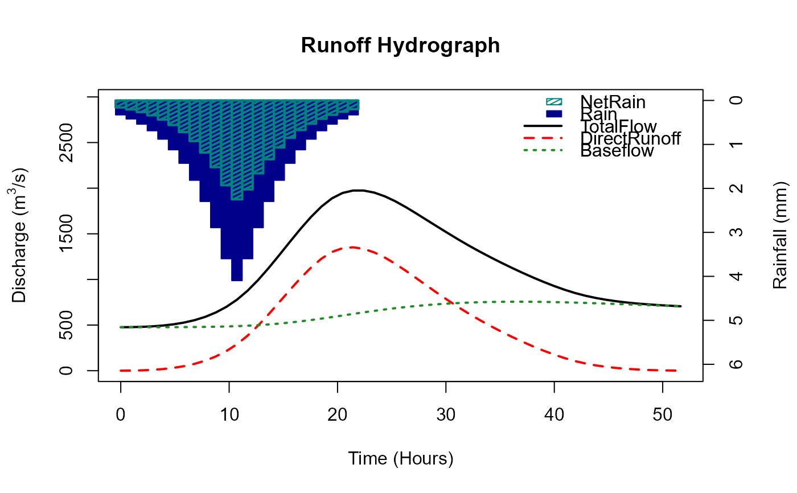
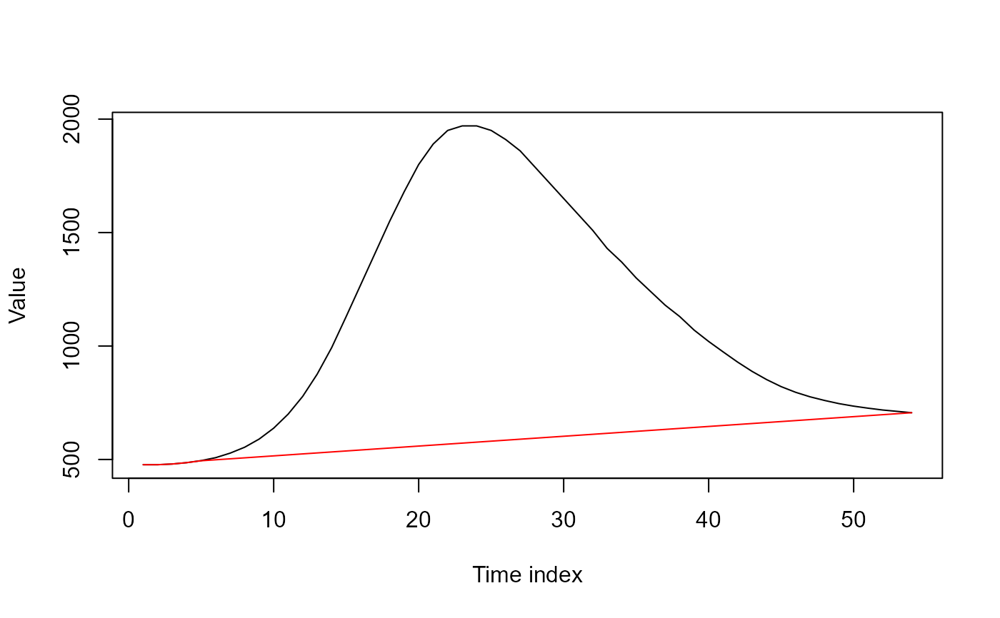
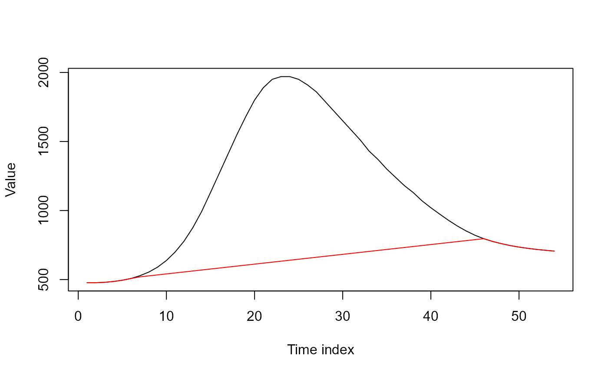

A function to separate baseflow from runoff.
Arguments
- x
A numeric vector (your flow series / hydrograph).
- BaseQUpper
Numeric value which is an upper level of baseflow (i.e. the baseflow will not extend above this level). The default is the mean of x. It can be set arbitrarily high so that the baseflow joins all low points/troughs in the hydrograph.
- AdjUp
A numeric value between 0 and 0.5. This allows the user to adjust the baseflow up the falling limb/s of the hydrogaph. With 0.05 being a small upward adjustment and 0.49 being a large upward adjustment.
- ylab
Label for the y-axis (character string). The default is "value",
- xlab
Label for the x-axis (character string). The default is "Time index".
Value
A dataframe with the original flow (x) in the first column and the baseflow in the second. A plot of the original flow and the baseflow is also returned.
Details
The function is intended for the event scale as opposed to long term flow series. It works by linearly joining all the low points in the hydrograph - also the beginning and end points. Where a low point is any point with two higher points either side. Then any values above the hydrograph (xi) are set as xi. The baseflow point on the falling limb of the hydrograph/s can be raised using the AdjUp argument. The function works for any sampling frequency and arbitrary hydrograph length (although more suited for event scale and sub-annual events in general). This function is not design for deriving long term baseflow index. It could be used for such a purpose but careful consideration would be required for the BaseQUpper argument especially for comparison across river locations. If baseflow index is required the BFI function (with daily mean flow) is more suitable.
Examples
# We'll extract a wet six month period on the Thames during the 2006-2007 hydrological year
thames_q <- subset(ThamesPQ[, c(1, 3)], Date >= "2006-11-04" & Date <= "2007-05-06")
# Then apply the flow split with default settings
q_split <- FlowSplit(thames_q$Q)

# Now do it with an upper baseflow level of 100 m^3/s
q_split <- FlowSplit(thames_q$Q, BaseQUpper = 100)

# Next we will get a single peaked "idealised" hydrograph using the ReFH function
q_refh <- ReFH(GetCDs(15006))

q_refh <- q_refh[[2]]$TotalFlow
# Now use the function with and without an upward adjustment of the baseflow on the falling limb
q_flow_split <- FlowSplit(q_refh)

q_flow_split <- FlowSplit(q_refh, AdjUp = 0.15)
